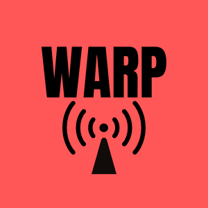

Kneaded Touch Massage
Kneaded Touch Massage is a massage business in Mount Pleasant, Iowa. I created their website with HTML, CSS, and some inline JavaScript. I secured their domain name and keep up with their hosting. I am the only maintainer of the website.

Park Finder
Park Finder is a full stack app built with JavaScript, Python, FastAPI, and MongoDB. The idea of the app is for users to get up to date information about National Parks in the United States. Users can document and share their experiences at each park through photos and reviews.

WARP
WARP is a functioning wireless sensor network written in Java. The codebase was assigned to me in CS 2820 of Fall 2023. I used object-oriented programming principles, especially in class design and inheritance, to encourage code reuse. I wrote 40+ JUNIt test for new and existing functions. I generated JavaDocs for new and existing methods and classes. I created UML class and sequence diagrams to visualize the system. Due to WARP being part of the class curriculum, I will not publicly provide the remote link.
Obfuscate Pro
Obfuscator Pro is a Python-based utility designed to simplify the process of code obfuscation using AI models, specifically the Gemini and GPT models. This tool acts as a wrapper around AI models, making it easier for users to obfuscate code, generate embeddings, find similarities, and build tables. It optimizes model parameters, prompts, and context to create high quality obfuscations.